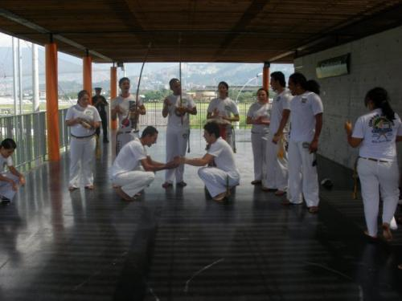

capoeira en colombia
однажды в студеную декабрьскую пору я из лесу вышел… был сильный накур. после чего меня вдруг неожиданно занесло за шесть с лишним тысяч километров в оплот тропических джунглей, всемирной наркоторговли, вооруженных бандформирований, ежечасно похищающих тысячи тупых белых туристов-гринго, сующих нос туда куда не надо, в общем, замечательную, любвеобильную и дружелюбную страну под названием coсainolombia (сокращенно colombia, не путать c округом columbia в пиндоссии)
первый визит к местным накаченным мулатокожим мастерам афробразильскаго ногодрыга произошел на второй день моего прибытия в городе богота, в стремном, богом забытом грязном, утыканным многочисленными оранжевокирпичными двухэтажными сараями, баррио в южной части этого многомиллионного муравейника. данному визиту мне поспособствовал любезнейший товарищ juancho из группы capoeira abolicao, который привел меня на тренировку к своим боевым собратьям.
зал одного из филиалов академии abolicao расположился на третьем этаже типично-фавельного барака без всяких вывесок. хотя внутренне содержание его было куда более приглядным, чем снаружи — аккуратный пол в серую плитку, национальные флаги колумбии и кроваво-красно-черный флаг академии наподобие «борьба или смерть» со скалящейся нямкой пантеры (чем-то мне очень напомнившей логотип so forca времен 2004-2005 г.). на противоположной стороне от окна расположился стенд с разного рода грамотами, разноцветными альпинистскими веревками, регалиями и прочими медалями за выдающиеся достижения в области спорта и просвещения неграмотной колумбийской молодежи великой мудрости уникального боевого искусства капоэйры.
когда мы приехали, дневняя тренировка уже подходила к концу, кружок приблизительно из двадцати с лишним человек находился в стадии тяжелого эпилептического припадка радостного завершения замечательно прошедшей тренировочной роды под традиционным названием „ух, капаэра!“. мы с иваном стояли в стороне, молча наблюдая за коллективным оргазмом. наконец всех немного попустило и люди подошли к нам, чтобы поздороваться.
первое, что бросается в глаза в группе (да и вообще, как оказалось впоследствии, в здешних людях) — это низкий, прямо таки карликовый рост подавляющего большинства участников, по сравнению с ними я казался прямо-таки настоящим великаном. мать моя в коньках на босу ногу, подумал я, а что же будет если туда приедет, например, саша урсо из белорусской аше-капоэйра? (фото я как-то выкладывал, ну да ничего пусть еще раз полежит здесь).
второе — так это абсолютное большинство лиц МП, женщин от силы 1-2 штуки, не больше (правда, впоследствии подтянулось еще пара довольно симпатичных латиноамериканок, но как выяснилось потом, это были жены/подруги местных инструкторов).
как выяснилось, в это время в группе abolicao проходил семинар с маленьким, шустрым, татуированным, накаченным как бочка, очень позитивным и сверхобщительным красавцем (NOT GAY) mestrando anai — этакой настоящей звездой мира моды капоэйра контемпоранья, объектом воздыхания местных красавиц и самым реальным и четким пацаном среди своих:-) (на фото третий слева)
(к слову сказать, при дальнейшем общении с ним выяснилось его прекрасное чувство юмора и куда большая адекватность, чем у многих остальных, порой абсолютно невменяемых членов группы). к слову, я решил поучаствовать в данном безобразии.
вечерняя тренировка в том же зале собрала около 40-50 человек, места было крайне мало, поэтому приходилось заниматься, периодически сажаясь на скамейку для запасных игроков.
в общем и целом, не вдаваясь в особые подробности, скажу, что было весело и интересно, да только вот капоэйры, как и на следующих тренировках capoeira abolicao, было с гулькин нос. разбору связок, движениям давалось очень мало времени, а если они и были, то крайне скучные и неинтересные (оторвался всласть я только тогда, когда было пара упражнений на близкую эшкиву с чередованием вращательных ударов, да пожалуй и все). две трети тренировок занимали разного рода физические упражнения — приседаньица на одной ножке, мосточки, игры «покатай меня на плечиках» и прочие забавы.
в конце тренировки состоялась рода. три беримбау, пандейро, атабаке. «ну наконец-то.» — подумал я, хоть какой-то свет в оконце. накось-выкуси. все началось с супер-быстрого ритма, через пять секунд заглушенного хлопками и ором стоящих в кругу (пением это назвать язык никак не поворачивается) и каких-то вообще непонятных песен с кучейбукф (видимо групповых-сектантских). в кругу в это время раздетые по пояс парни, прыгали клевую акробатику 4 chicas, периодически пытаясь друг другу дать в щи. именно, первое, что запомнилось — так это то, что многие не пытались продолжить диалог и обмен ударами, а именно хотели въебать да посильней. через двадцать минут мне таки как следует прилетело в башню. два раза пытался поиграть на более медленных ритмах — ничего не получилось, все заканчивалось тем, что меня хватали за пояс и вышвыривали из круга:-) как-то перехватить батерию — когда в кругу уже началось месиво „поиграй пять секунд и уходи, нас еще сразу трое входит, а поем все кроме гунги и черт знает что“ тоже не получилось — не дали. в общем, музыкальную составляющую группы abolicao кроме как порнографией «дрочи быстрее, я сейчас кончу» назвать не могу. расстроило, в общем.
в последующие дни я побывал еще на паре тренировок, но и там не обнаружил каких-то особых изменений (правда, связок и разборов движений на этот раз было больше — типично контемпорских и парочка явно подспиженных у эспирро мирима).
завершающая рода состоялась в другом, более просторном зале, ближе к центру города. было несколько гостей из группы capoeira nago.
к слову, на сей раз было все лучше, глаз запечатлел пару неплохих игрушек, но в целом ничего выдающегося (я на виоле)
двумя неделями позже мною были посещены еще несколько групп, на сей раз уже в г. medellin и в г. cali.
сразу же скажу, что из нижеперечисленных сходил не во все, ибо не было у меня такой пламенной цели (да и времени) увидеть все и поиграть со всеми (в тамошних краях находилось куча гораздо более приятных вещей (ну вы сами понимаете, о чем тут говорить) — телки-метелки, сальса бары, совместные концерты с местными перкуссионистами, арт-комюнитис, поедание пейотов, горы кокса, бошечки коричневые и прочие радости жизни, ну какая тут капаэра?:-)
итак, в данных городах капоэйра представлена следующими группами:
сapoeira abolicao. возглавляет группу professor curioso

к слову, одно из немногих приятных исключений. отличный чувак, внешне этакая смесь маузиньо и кавейры, очень мы с ним сошлись, не нарадовался c ним играть.
capoeira anaue (professor pescador)

одна из самых многочисленных групп в медельине. некисло рассмешило название, сразу же вспомнил знаменитый меметичный ролик «ананаэ ананаэ анана». первая тренировка с ними в медельине в месте под названием el estadio de combate (огромный крытый стадион, на двадцати площадках которого одновременно занимаются ушуисты, каратисты и прочие крутые MMA fighters) запомнилась могучим неадекватом со стороны их главного тренера (по-моему, это и был их „профессор пескадор“. данный персонаж лет за 35, несмотря на всю свою суровость, выглядел довольно комичным и изрядно напомнил мне главного и самого ветхого тренера киевской expressao paulista, периодически доставляющий своими сольными театральными номерами про «кровавое боевое искусство угнетенных рабов» на уличной роде в центре киева. на меня он не обратил никакого внимания, хотя я пару раз пытался его подозвать. его помощница, девочка ну с очень серьезным лицом секретрая президента США, запретила мне заниматься в обуви (хотя я очень долго настаивал), мотивируя это тем, что «здесь типа специальное покрытие», хотя краем глаза мною было замечено, что на соседних площадках народ тренируется в кедах=) тем не менее, я вежливо снял обувь. после чего началась рода, в которую меня не пустили. типа тренировочная такая рода. супер-быстрый ритм на магнитофоне, три хлопка и игры парами по тридцать секунд. после чего мрачный олдфаг колумбийской капаэйры собрал всех задротов в узкий кружок и в течение получаса им что-то втирал. я же остался в стороне, решив подождать когда закончится сия мудрая беседа. не дождавшись, я плюнул и решил пойти к рукопашникам на соседнее татами, где отрабатывались удары на лапах. спросив разрешения у тренера и быстро, без особых проблем его получив, я радостью встал колотить кожаные квадраты, убивая оставшееся время).
впоследствии побывал у них еще на паре тренировок, на сей раз без пескадора, удалось несколько раз поиграть и один раз прокатиться по одному из главных тренеров моей любимой шибаткой. ему понравилось:-)
capoeira carybe (mestrando cobrinha). местную группу возглавляет мениноподобный (ну вообще вылитый, даже прической) estagiario vermelho.
ABADA (ну уж куда ж без нее, родной-то?) — graduado mantis. на уличной роде запомнился своими невероятно быстрыми мейалуами (кстати, крутит отлично, ссыкотно так находиться рядом)
capoeira brasil (instrutor santo/instrutora maria bonita, graduado patua). от пары походов на тренировки этой группы из всего контемпорского зоопарка от этой остались самые мимимишные впечатления. как и в других группах, капоэйры ноль целых хрен десятых, зато очччень много симпатичных начинающих девочек, с которыми удалось поиграть в лошадки, „поотрабатывай со мной в паре мостик“, «потяни мне спинку (а давай сегодня вечером в сальса-клуб?)» и прочие приятные, радующие глаз вещи (точнее части тела, да):-)
nativo de minhas (или minas?не помню уже) (mestre aranha, professor tavatinga).
senzala (professor king kong)
oficina da capoeira (WTF? не знаю, возможно 386-я версия мунду?)
capoeira nago (mestre pequines). в г.cali — самая крупная. местный куратор — professor goku. был на одной тренировке, ничего выдающегося, побуцкались с главным тренером, посадил ему фингал мартелой.
axe capoeira
cordao de ouro

okaras capoeira (contemporanea)
capoeira semente de jogo de angola (profesor andres/professor mariana).
лучик света в царстве тьмы, группа ученичков большого обожаемого многими фаперами с инсайда черного дядьки, который «такой здоровый, а поет как баба» ©бандейра.
первая трехчасовая тренировка состоялась в центре медельина через дорогу от teatro pablo tobon uribe, на четвертом этаже небольшого эзотерического центра. прекрасный, по-домашнему уютный (чем-то очень напоминающий киломбольский) небольшой зальчик с зеркалами, деревянными скамейками, деревянными стенами и полом с ч/б портретами старых мастеров в рамках и инструментами на стенах. группа небольшая, 8-10 человек максимум. славный дресскод. все в белом, по-олдскульному, рубашечки, черные ремни, белые штанцы и ботинки. очень мало остановок. андрес давал совсем несложные связки на низких и средних уровнях, но вымок я капитально, сразу же вспомнилось, что такое мееедлееееная, блять, отработка движений, когда мейа луа (рабо ди арраю) надо тянуууууть и не останавливаться, потом также очень медленно, переступая с ручки на ручку, делать ау (к слову сказать, юра, пару человек в группе это делали ну нереально сцуко круто, такого четкого слоумоушна я давно не видывал ни у кого), складываться в негачиву и пр., в общем, давно забытые и приятные ощущения). была и отработка в конце жесткой раштейры, причем андрес так хорошо пригвоздил одного чела лицом в пол, что тот не шевелился еще секунд пятнадцать (вспомнилось, как эшпигау подсек космоса в аналогичной манере). я спросил андреса: слушай, а в чем разница между раштейрой и шинелой? у нас бандейра это называет шинелой. тот отвечает: ну, у нас ЖДД все называет раштейрой, мораес вот эту пижню называет бандой, короче не парься по названиям, забей. только я отвернулся, андрес мне тут же врезал по левой ноге и я упал как подкошенный) посмеялись.
также сходил пару раз на их пятничную роду в очень красивом месте, увитым тропическими растениями, садом, где-то на окраине медельина. настоящая тру капоэйра ангола рода по всем канонам, десять человек в батерии (играют и поют хуево, ритм периодически падает), двое играющих, игры по тридцать минут. уровень игроков достаточно слабый, кроме андреса особо посмотреть не на что, есть пара занятных чувачков (один из которых мне жутко напомнил олдфага ливси из незалэжной), но они почему-то не пришли. но все очень по-милому и по-доброму. и, вообще подводя итог от встречи с ними, самые приятные впечатления — никакой мозгоебли, никакого идеологического маразма, характерных для многих черно-желтых групп, только традиции и игра, ничего больше.
viernes. roda de rua en el parque de los deseos.
каждую пятницу в центре медельина в 17.00 в месте под названием parque de los deseos (парк желаний) проходит уличная рода „без ярлыков“. побывал на трех. все по-разному.
заправляют оркестром, двое чуваков — круглый как пивная бочка patua из capoeira brasil и маленький щуплый чел под погонялом bruxo из группы ананауэ капаэра. очень неплохо пушадорят, правда периодически теряют контроль над родой. и мне наконец-то, блять, удалось здесь (не без их помощи) попеть! и на виоле покачать. роды начинаются по всем канонам, как и положено, с ладаиньи, которую заводит bruxo. в батерии почему-то нет пандейро, реку-реку и агуго (все три раза не видел).
раскачивается все неплохо, правда вот, очень долго народ тупил на входе, даже когда было подано несколько сигналов от гунги (вот бесячее это — хуле ты сидишь рядом с батерией, если не выходишь в роду? некоторых приходилось отодвигать и заходить в игру). вот только все это хорошее действо длится не более пятнадцати, в лучшем случае, двадцати минут. дальше и последующие две трети начинается традиционная контемпорская жвачка на избитую тему «поиграй пять секунд и уходи». очень много (и все не в кассу) акробатики (привет, послание от иванария), показухи. играющих единицы. но и здесь попадались приятные исключений в мире разгоряченных животных. невыразимо порадовала девочка, bruja (ведьма) бывшая ученица страшного пискадора из ананаэ капаэра, cейчас внегруппная.
маленькая, кругленькая, чем-то очень по пластике смахивающая на бонакву и катарину, вкручивающаяся короткой шкивой на ближней дистанции и лупящая низкими мартелами по ребрам. от нее получали буквально все. «мимими, пир-пир-пир» — радовался я сбоку:-). очень ее люблю.
также было и пара занятных чувачков, чем -то очень близко напомнивших братьев запашных из бельцов.
в общем. дорогие россияне. подводя итоги, можно выделить следующее.
в подавляющем большинстве групп капоэйра здесь не больше чем прикладная спортивно-физкультурная дисциплина. культура традиций капоэйры,ее глубокое и фундаментальное изучение со всех сторон здесь практически отсутствует. если хотите найти что-то более или менее приемлемое — заходите в гости к FICA в боготе, volto do mundo (отделение ЖДД в боготе) или SDJDA в медельине, больше ловить там нечего. частенько вспоминалось меткое выражение антона "есть те, кто играют капоэйру, а есть те, ей «серьезно занимается». представителей последних здесь очень много.- бицепсы, татуировки, щавъебу, бимба-ин-май-харт-форева и пр.:-)
за сим заканчиваю сей опус и низко откланиваюсь. ваш покорный слуга зеленый ящер с берегов панамы.
п.с. вопросы-комменты, с радостью отвечу. hasta luego.